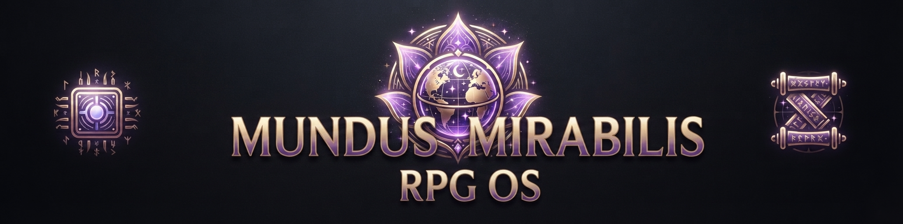

|
RPG-OS
A header-only C++23 universal rule engine for tabletop role-playing games
|
|
RPG-OS
A header-only C++23 universal rule engine for tabletop role-playing games
|
A header-only, C++23 universal rule engine and "operating system" for tabletop role-playing games. All rules live in ruleset-specific JSON files; the engine resolves them in two modes that share one template-based core.
codegen/rpg_os_codegen.py compiles a ruleset's schema into a strongly typed header with named members and methods (courage(), baseAttack(), climbCheck(), ...). Formulas compile to C++ and checks use constexpr configs — no dynamic allocation in the hot path. The generated code still loads the JSON at runtime for the data database (creatures, items, archetypes).
Full example rulesets are provided for D&D 5th Edition (SRD 5.2.1) and The Dark Eye 5th Edition in rulesets/. Their data sections are complete transcriptions of the source documents: the D&D SRD ships the full bestiary (317 monsters), spell list (329 spells), all 15 conditions, all 14 sample poisons and 3 magical contagions; the TDE core rules ship its complete bestiary (10 creatures), spell list (52 spells), statuses, and poisons. The extraction is reproducible via .local_ressources/extract_srd_data.py and .local_ressources/extract_tde_data.py (they parse the PDF-extracted markdown in .local_ressources/; these one-off helpers are kept out of the repository).
Useful options:
| Option | Default | Effect |
|---|---|---|
RPG_OS_BUILD_TESTS | ON | Build the test suite |
RPG_OS_WARNINGS_AS_ERRORS | OFF | Treat compiler warnings as errors |
RPG_OS_ENABLE_SANITIZERS | OFF | Build with AddressSanitizer + UBSan |
RPG_OS_RUN_CODEGEN | OFF | Regenerate generated/*.hpp during the build |
RPG_OS_BUILD_DOCS | ON | Render the Doxygen documentation into html/ (gitignored) |
Requires CMake ≥ 3.24 and a C++23-capable toolchain whose standard library provides <expected>: GCC ≥ 13 (libstdc++ ≥ 13), or Clang ≥ 17 with libc++ ≥ 17 (Apple clang on macOS, or -stdlib=libc++ on Linux). Clang 17/18 with GNU libstdc++ 13 does not provide <expected> — use Clang ≥ 19 with libstdc++ instead.
The API reference is rendered with Doxygen and the Doxygen Awesome theme (vendored under docs/doxygen-awesome/). It is published on GitHub Pages for both lines of development:
| URL | Content |
|---|---|
| https://mundus-mirabilis.github.io/RPG-OS/develop/ | Current development — the docs for the develop branch |
| https://mundus-mirabilis.github.io/RPG-OS/main/ | Latest release — the docs for the main branch |
Release tags are additionally deployed under /vX.Y.Z/. Every build is rendered from the same Doxyfile in this repository, so the local and the published documentation are identical.
Documentation generation is part of the build (RPG_OS_BUILD_DOCS=ON by default) and can also be triggered from VS Code via the **"Build Documentation"** task:
The generated pages live in html/ at the repository root — a gitignored directory in the source tree, never committed. The Doxygen configuration is the single Doxyfile at the repository root, used identically by the local build and CI. See docs/README.md for the full setup.
Regenerating the codegen outputs:
The code generator compiles a ruleset's schema into a strongly typed header. Attributes become named members, derived stats become compiled getters, and checks become named methods — while the character data still comes from the ruleset JSON at runtime:
The same check through the universal engine produces identical results — a parity test enforces this.
Every ruleset is a single JSON file validated against rulesets/ruleset.schema.json (JSON Schema draft-07). The top level carries the ruleset metadata, including two fields every ruleset must provide:
The loader refuses to load a ruleset without a licence, and the shipped validator codegen/validate_ruleset.py checks every ruleset against the schema (full draft-07 validation when jsonschema is installed, structural fallback otherwise). CI runs it on every pull request.
Data records (creatures, archetypes, items, spells) may express a numeric value in three forms:
7,"2d6+4" (kept verbatim from the source),{ "min": 2, "max": 12 }.Once a dice string is parsed it is a plain C++ object, and there are two literal forms that build one directly from source text:
The _dN suffixes (_d2, _d3, _d4, _d6, _d8, _d10, _d12, _d20, _d30, _d100) make the common cases readable, with +/- overloads on rpg_os::DiceExpression folding the result into one object; the _dice suffix parses any dice string — the form the generated ruleset headers use, so a check's dice are parsed once at startup rather than on every roll.
When a caller picks such an entry (e.g. an animal as a fight opponent) it can request a variance via rpg_os::Variance:
| Variance | Meaning |
|---|---|
Random (default) | uniform over the range; dice expressions are rolled |
Weakest | the minimum |
Weak | random value in the lower third |
Average | random value in the middle third |
Strong | random value in the upper third |
Strongest | the maximum |
Variance::Weak / Average / Strong draw from the lower / middle / upper third of the range at random; Random draws uniformly over the full range. The shared helper rpg_os::readVariantValue (include/rpg_os/core/variance.hpp) backs both the universal engine and the generated code.
include/rpg_os/universal/combat.hpp runs a fight between two archetypes or bestiary entries "to the end" (attack-vs-defence check, event-driven damage pipeline with armour absorption), creating fresh entities per fight so ranged values are re-rolled every time. It is demonstrated by the fight example:
A combatant that knows spells (an archetype with spells_known, e.g. the TDE Magister) fights with magic by default: each round it casts its strongest affordable damaging spell instead of swinging a weapon, falling back to a weapon only once it is out of usable magic. Pass --no-magic for a pure weapon-vs-weapon comparison:
scripts/elo_ranking.py ranks every combatant with a Monte Carlo ELO tournament. It runs a Swiss pairing (each combatant plays one similar-rated opponent per round) instead of a full round-robin, so it needs only O(rounds · n) fights rather than O(n²) — and the individual fights execute in --jobs parallel processes:
Every random consumer follows the same rule: explicitly seeded = exactly reproducible, unseeded = varied on every run. rpg_os::randomSeed() draws one word of easily available entropy from the OS random device (falling back to the high-resolution clock where no device exists) — plenty for a game, where the goal is simply that no two runs are the same. A default-constructed rpg_os::DefaultRandom seeds its std::mt19937 from it, so --seed N replays a fight or ranking exactly, while omitting --seed gives a different result on every run (the ELO script prints the seed it used so a run can be reproduced by re-passing it). Callers who need stronger randomness can pass an explicit seed of their own.